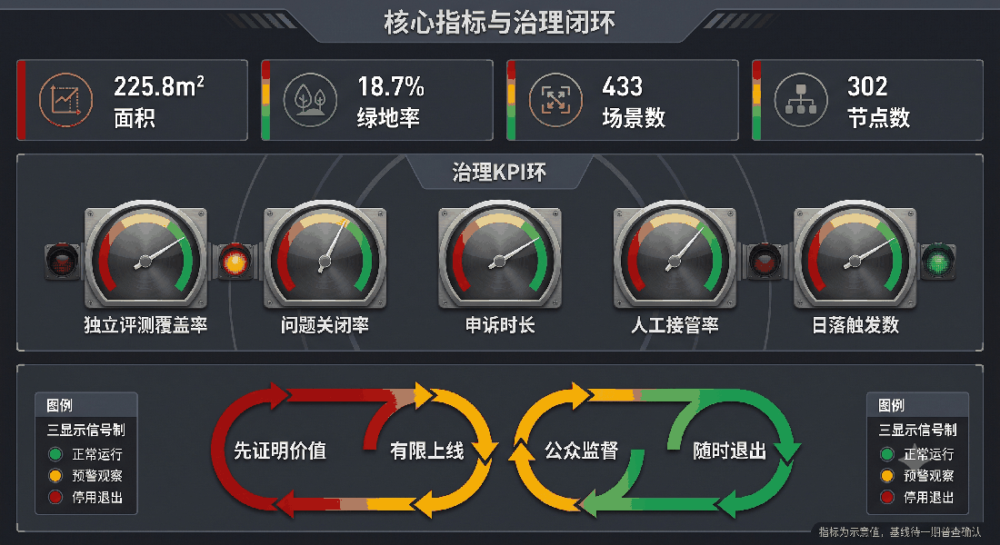

Jingzhang AI Valley: Switchback Governance Corridor
Using the Ren-shaped switchback line and turn-around operation of the Jingzhang Railway as an institutional prototype, this proposal establishes a governance corridor of switchback review, grade-based access, and K-marker versioning for urban AI, so that every urban intelligence stays traceable, stoppable, and reversible along the track.
Jingzhang AI Valley: Switchback Governance Corridor
**English name: Jingzhang AI Valley — Switchback Governance Corridor; motto: make every urban intelligence traceable, stoppable, and reversible along the track.**
Design Basis and Source Inventory
This deliverable is an open co-creation conceptual urban design; it does not replace statutory planning, government approval, or engineering design. It is based on the official announcement, the agent taskbook, the public site package, and the repository source registry [source:OFFICIAL-ANNOUNCEMENT] [source:AGENT-TASKBOOK] [source:SITE-PACKAGE] [source:SOURCE-REGISTRY]. The current SITE_BOUNDARY and the three KEY_AREAs come from the repository provisional geometry [source:BOUNDARY-SOURCE] [source:KEY-AREA-SOURCE]: they are used only for generation, discussion, display, and entry self-check, and are not an official redline; they do not support floor-area-ratio, height, retain/renovate/demolish, ownership, road redline, or precise-area conclusions. Full recalculation is required after official polygons are released [depth:metrics_recalculation].
The method is an "evidence — switchback — metrics — versioning" quadruple: every strategy binds a source, a spatial layer, switchback conditions, reviewable metrics, and version records. All urban AI follows minimal data, opt-in, appealable, human-final-review, logged, and independently evaluated principles. [standard:PROJECT-OFFICIAL-ANNOUNCEMENT] [depth:existing_conditions_diagnosis]

Switchback Governance Protocol (Core Institution)
This proposal uses the Ren-shaped switchback line at Qinglongqiao on the Jingzhang Railway as its institutional prototype: a train climbing a steep grade cannot go straight; it must stop at a switchback point, change direction, and continue. Innovation works the same way: any urban AI scenario, before reaching its capability limit, should be re-evaluated at a switchback point instead of automatically continuing in its original direction. Four mechanisms:
- **Switchback Nodes**: every AI scenario sets fixed switchback nodes on its running track. At each node the train stops and a three-party review — scenario responsible entity (decision), professional review (technical), public representative (rights) — decides "pass / turn back / pull into depot". Any party's veto forces a turn-back; there is no automatic continuation [depth:switchback_governance].
- **Grade-based Access**: referring to the railway's 33‰ maximum grade, scenarios are graded by climbing difficulty into three levels — gentle (universal-experience, community-level access), medium (industry-validation, requires professional pre-review), steep (research-frontier, requires joint-attack agreement). The higher the grade, the stricter the admission and re-review [depth:grade_based_access].
- **K-marker Versioning**: the proposal uses railway kilometer markers as version anchors; each official data update, major event, or recalculation records a new K-marker, forming a traceable version chain [depth:kmarker_versioning].
- **Switch States**: scenario running states are expressed as "mainline running / siding turn-back / depot maintenance", with no automatic recovery; returning from maintenance to mainline requires re-evaluation at a switchback node [depth:switch_states].
Three-Level Scope Framework
The switchback governance approach does not label traditional parks with AI; it develops a **public-value switchback corridor** along the centennial Jingzhang railway line: problems are raised by residents and enterprises, prototypes are developed in the three areas, factors and scenarios are obtained in the two wings, small-scale validation runs in the public test belt, and public results finally decide pass, turn-back, or pull-into-depot.
- **One Belt**: the Jingzhang Heritage Park as the public spine, "walkable, learnable, testable, reviewable".
- **Three Cores**: Zhongzhi Park for full-stack tools and safety evaluation; AI Origin Community for research–startup–community co-creation; Dazhongsi for AI-native consumption, business, and public experience.
- **Two Wings**: the Zhongguancun service wing for capital, IP, talent, and international services; the Xiaoyue River scenario wing for controlled testing of transport, ecology, health, and robotics.
- **Four Segments**: identify problems → sandbox validation → public experience → switchback review, forming a reversible urban renewal mechanism.
Spatial evidence: [data:geometry/site_boundary.geojson#SITE-001], [data:geometry/key_areas.geojson#PROV-KEY-001], [data:geometry/roads.geojson#RD-001]. Overall control prefers activating the ground floors of existing buildings, railway nodes, under-bridge and corner spaces rather than large demolition; any bridge/tunnel, underground-space, heritage-protection, and transport proposal requires special study. [depth:three_level_scope_framework] [depth:overall_spatial_structure]

Visual Identity
The logo direction is "Ren-shaped switchback + railway double track + K-marker anchor", in deep-track blue, validation green, and historic bronze. Character marks are drawn independently; no corporate trademarks or restricted fonts are used. Wayfinding uses three systems — culture brown, public-service blue, test-status yellow/green — and is not mixed with the main belt logo.
Coordinated Research Area Industry and Future City Study
The switchback corridor translates industrial policy into eight shareable factors: compute vouchers, trusted data spaces, model evaluation, open-source legal services, first-trial scenarios, patient capital, international talent services, and public-procurement evidence. Zhongzhi Park builds a "toolchain–model–agent–robot" joint validation stack; the AI Origin Community forms a short loop of university labs, open-source communities, startup teams, and resident issues; the Zhongguancun service wing provides IP, standards, financing, and internationalization services. All support is a mechanism suggestion and does not represent fiscal, investment, or enterprise commitments.
Six Benchmark Cases and Transferable Points
|Case|Learning point|Jingzhang translation|Not to copy| |---|---|---|---| |Singapore Smart Nation / AI Verify [source:CASE-AI-VERIFY]|Public-interest goals, standardized testing|Public AI evaluation protocol for urban AI|National identity and data conditions| |Barcelona 22@ [source:CASE-22AT]|Old industrial mixed renewal, innovation network|Railway heritage + incremental activation of existing stock|Large-scale real-estate renewal| |Eindhoven Brainport [source:CASE-BRAINPORT]|Enterprise–university–government collaboration|Task-based alliance of three cores and two wings|Single-champion dependence| |Toronto Waterfront digital-governance debate [source:CASE-QUAYSIDE]|Learning from failure in data governance and public consent|Data impact assessment, turn-back and depot entry|Platform-enterprise-led governance| |Boston Kendall Square [source:CASE-KENDALL]|High-density research commercialization and public space|Origin Community walkable innovation network|High-rent exclusion effect| |Shenzhen Nanshan [source:CASE-NANSHAN]|Industrial chain, capital, rapid scenario iteration|Zhongzhi full-stack validation + Dazhongsi market feedback|Speed replacing safety evaluation|
Benchmarks serve only as methodological background and do not support statutory spatial control. Formal spatial and task conclusions follow the repository registered materials. Ecological indicators adopt "evaluation criteria rather than target values": open test task count, independent evaluation coverage, public issue closure rate, SME usage rate, accessibility participation rate, switchback/depot-entry record count; missing baselines are marked pending, with no fabricated output or investment figures.
Overall Design Area Urban Renewal at Regulatory-Plan Urban Design Depth
The overall design uses "railway culture spine + switchback governance ring + horizontal stitching openings" as its skeleton: retain reusable stock, supplement continuous slow mobility and public services, and add new volume only after official control plans, ownership, heritage, and municipal conditions are confirmed. Four conceptual land-use categories carry innovation R&D, mixed services, culture-public, and blue-green open functions [data:geometry/land_use.geojson#LU-001]; building scale is only a conceptual-base recalculation [data:geometry/buildings.geojson#BLD-001] [metric:building_footprint_area_sqm], not statutory capacity. [standard:MOHURD-CONTROL-DETAILED-PLANNING] [depth:land_use_layout] [depth:development_intensity_controls]
Renewal objects are divided into retain-reuse, adaptive renovation, conditional demolition, and reversible new-build: when the current building survey is missing, no specific demolition is determined; height, massing, and skyline are directed toward low-rise public interfaces and railway-view-corridor protection, pending control-plan verification [depth:height_massing_character] [depth:retain_renovate_demolish]. Municipal services adopt demand-side reduction, distributed energy, and edge compute concepts; engineering capacity awaits special study [depth:municipal_new_infrastructure].
Key Areas Detailed Design
- **Zhongzhi Park AI Acceleration Area** [data:geometry/key_areas.geojson#PROV-KEY-001]: garden-type validation stack; shared ground-floor toolchain, model evaluation, and safety experiments; slow mobility connects to the Qinghe; robot testing is speed-limited, time-limited, and takeover-able.
- **Beijing AI Origin Community** [data:geometry/key_areas.geojson#PROV-KEY-002]: near-campus commercialization blocks; small blocks, shared ground floors, open-source dome, and living services form a walkable innovation network.
- **Dazhongsi AI Industry Cluster** [data:geometry/key_areas.geojson#PROV-KEY-003]: urban AI-native economy blocks; four-quadrant stitching of commerce, data-factor theater, and public experience, avoiding closed campus-ization.
All three are provisional polygons; scale, retain/renovate/demolish, road interfaces, and building form express direction only; after official boundary replacement, area, conflict, and accessibility recalculation is redone [metric:key_area_count] [depth:three_key_area_detailed_design].

AI Innovation Ecosystem, Talent Profiles, and AI+ Scenarios
This section develops users, scenarios, testing, and operations according to the agent open-call taskbook, rather than treating AI as a decorative label [source:AGENT-TASKBOOK] [standard:PROJECT-AGENT-OPEN-CALL-TASKBOOK]. Six user types: commuters, elderly/disabled, students and researchers, startups and SMEs, tourists and families, and frontline operators. Every scenario must publish its purpose, data, model limitations, human responsible entity, switchback nodes, and stop conditions.
Twelve Scenario Cards (with Grade and Switchback Condition)
|#|Scenario—space—operation|Grade|Switchback condition (stop and evaluate)|Success metrics (evaluation criteria)| |---|---|---|---|---| |01|Accessible route assistant—full belt slow network—community co-test|Gentle|Route suggestion rejected 3 consecutive times|Accessible route coverage, correction time| |02|Crowd guidance suggestion—node plaza—on-site dispatch|Medium|False-alarm rate above threshold|Wait time, false-alarm rate| |03|Multilingual cultural guide—railway heritage—heritage review|Gentle|Historical error corrected|Correction rate, comprehensibility| |04|Community service navigation—Origin Community—block service desk|Gentle|One-stop rate below baseline|One-stop completion rate| |05|SME compliance assistant—service wing—professional review|Medium|Adoption and withdrawal rate anomaly|Adoption/withdrawal rate| |06|Open-source compute scheduling—Zhongzhi Park—resource committee|Steep|Resource fairness complaints|SME availability| |07|Robot low-speed delivery—Xiaoyue River wing—time-windowed|Steep|Any takeover failure|Zero harm, takeover rate| |08|Public-space microclimate suggestion—park node—landscape review|Gentle|Suggestion rejected by landscape dept|Thermal comfort improvement| |09|Aged-care health service navigation—community node—medical referral|Medium|Misleading rate above threshold|Misleading rate, referral completion| |10|Consumer service translation—Dazhongsi—merchant co-governance|Gentle|Complaint rate above threshold|Complaint rate, response time| |11|Public-safety review assistant—operation center—post-hoc review|Steep|Review conclusion challenged|Review loop closure rate| |12|Resident issue synthesis—switchback assembly hall—random audit|Medium|Fairness audit fails|Viewpoint coverage, fairness error|
Three Switchback Test Fields
A "pre-deployment model evaluation field": bias, hallucination, robustness, privacy, and accessibility testing; B "robot slow coexistence field": limited area, speed, time, remote takeover, and accident depot-entry; C "public service agent joint test field": cross-department process sandbox, using only synthetic/cleared data, not connected to production systems until passed. Test states are published in "mainline/siding/depot" tri-state; any non-mainline state must not be described as deployed.
Land Use, Building Scale, and Retain/Renovate/Demolish
Conceptual land use complements mixed innovation, public services, cultural display, and blue-green open categories, and does not single-source R&D offices; layer areas can be recalculated, but planning proportions and floor-area ratio await official boundary and control plan [data:geometry/land_use.geojson#LU-002] [metric:floor_area_ratio] [standard:MNR-LAND-USE-CLASSIFICATION-GUIDE]. The current building layer expresses only a participant-controlled adaptive-renovation base [data:geometry/buildings.geojson#BLD-001]: prioritize "keep structure, renovate ground floor, supplement accessibility"; demolition requires safety, heritage, carbon, and public procedures; additions use removable small volumes. [standard:MOHURD-ARCH-DESIGN-DEPTH-2016]
Transport, Rail, Municipal, and Public Services
The switchback corridor prioritizes walking, cycling, and public-transit connection, with one conceptual slow-mobility spine connecting the three areas and stitching existing road gaps horizontally [data:geometry/roads.geojson#RD-001] [metric:road_length_m] [depth:traffic_rail_slow_parking]. Station and river alignments are verified against OpenStreetMap public features (Overpass query and ODbL attribution in visual/assets/osm-context.json) [source:OSM-BASE], for reference only, not survey-grade. Parking follows sharing, off-peak, and periphery-transfer directions; new bridges/tunnels are not commitments. Public services embed in 15-minute nodes, including accessibility consultation, talent services, open-source legal services, and human fallback windows; new infrastructure is edge-first, minimal-collection, distributed-energy, and coordinated with conventional municipal works; capacity and stations await special review [depth:municipal_new_infrastructure].

Blue-Green Space, Public Space, and Urban Character
**Completed-facts vs planned-target layering (reviewable):** Phase 1 of the Jingzhang Railway Heritage Park **opened in June 2023**, 2.4 km long and 16.8 ha, forming a public park with slow paths and cycling [source:JZ-PARK-PHASE1-OPENED] [source:JZ-PARK-PHASE1-REPORT]; the Wudaokou startup zone completed about 800 m / 1.7 ha of landscape enhancement in September 2019 [source:JZ-PARK-STARTUP-2019]. In 2025 Phase 1 hosted 60+ themed events and received 4.3+ million visitors (operator statistics) [source:JZ-PARK-2025-EVENTS]. **Phase 2 remains under construction/advancement**, planning five clusters — Jingzhang water-vein, community vitality, heritage memorial, youth international exchange, and natural leisure — with "about 9 km serving nearly 70 communities and about 450,000 residents" as a planned service target, not completed status [source:JZ-PARK-PHASE2-PLANNED]. All "about 9.7 km spine" statements in this proposal refer to the planned target; spatial evidence uses provisional boundaries.
The conceptual blue-green base consists of the Jingzhang Heritage Park, Qinghe/Xiaoyue River connections, and pocket gardens [data:geometry/green_space.geojson#GRN-001] [depth:blue_green_public_space]; actual shorelines, ecology, and heritage boundaries await official data review. Public space uses a three-level "continuous slow spine—horizontal stitching openings—switchback validation stations": the park spine organizes walking, cycling, rest, and culture; horizontal stitching prioritizes improving existing crossings and accessibility, with new bridges/tunnels only as concepts awaiting special study; validation stations embed removable, modular components into existing space [data:geometry/public_space.geojson#PUB-001] [metric:public_space_ratio].
1. **AI Origin·Open-Source Dome**: an open-source achievement growth-ring and real-time evaluation wall, showing data sources, versions, failure records, and contributors; no commercial rankings. 2. **Jingzhang Centennial·Timeline Station**: uses switchback signal language to connect 1909, the innovation era, and the AI future; all historical facts are reviewed by professional institutions. 3. **Switchback Assembly Hall**: a circular space where residents, developers, and operators jointly review urban AI, with quiet rooms, accessible seats, children's viewing platforms, and human appeal windows.
Dazhongsi explores "AI-native but not human-free" new formats: explainable product advisors, cross-language services, robot nighttime restocking sandboxes, AI creative workshops, and digital accessibility certification. The component library includes: dual-face information columns (service/risk), edge interaction desks, retractable robot docking bays, low-illumination sensing poles, rain-garden seating, and contributor plaques. Components must not block heritage entities, fire safety, blind lanes, or traffic sightlines. The honor system records only reviewable contributions: open-source code, public data, accessibility fixes, public issue closure, and long-term maintenance.
5. One Spatiotemporal Narrative of Three Cultures (agent.5)
The narrative is not "railway + code" decorative collage but three shared values: the Jingzhang Railway's autonomous engineering and public connection, Zhongguancun's open experimentation and knowledge transfer, and the AI era's verifiable collaboration. The tour has three acts: **set out from autonomous construction — iterate in switchback turn-around — co-own human-centered intelligence**.
Wayfinding uses sleeper rhythm, coordinate ticks, and switchback stamps; cultural identity tells "time and place", the overall logo tells "switchback and validation", strictly layered. International copy: *From the first railway engineered by China to civic AI tested with the public — Jing-Zhang turns innovation into a shared, accountable urban capability.* All historical images, fonts, portraits, and marks use only self-made, public-domain, or explicitly licensed materials.
Renewal Project List, Implementation Policy, and Phasing
The project list is organized into four categories: reversible prototypes, public-evidence facilities, slow-mobility stitching, and existing-stock ground-floor renewal; the conceptual phasing layer records near-term pilots, switchback nodes, and exit conditions [data:geometry/phasing.geojson#PHASE-001] [depth:renewal_project_list] [depth:phasing_implementation], and does not represent government investment, recruitment, or approval arrangements. The annual rhythm follows real urban problems rather than exhibition traffic:
- Spring "Urban Problem Open Season": residents and frontline operators publish tasks into public problem lists;
- Summer "Pre-Deployment Challenge": red-team and reproduction around safety, fairness, accessibility;
- Autumn "Jingzhang Urban AI Week": open demos, international dialogue, failure-case exhibitions, and professional review;
- Winter "Public Value Review": publish metrics, switchbacks, depot entries, accidents, stops, and next-year budget suggestions.
The developer community implements task claiming, mentor review, version tracing, maintenance commitment, and permanent contributor attribution; test scenarios pass a six-gate process: "proposal — ethics/safety pre-review — small-scale trial — public feedback — independent evaluation — pass/switchback/depot". International cooperation exports only open protocols, evaluation sets, and reusable components, never unauthorized data.
7. Implementation Roadmap and K-Markers
|Phase|Low-regret actions|Gate to next phase| |---|---|---| |K0—K3 (0–6 months)|Official data completion, accessibility audit, issue solicitation, existing-stock inventory|Source clearing, public-representative participation, risk ledger complete| |K3—K6 (6–18 months)|3 reversible prototypes, public evaluation protocol, contributor system|Independent evaluation passed, major risks can depot-enter| |K6—K9 (18–36 months)|Three-core two-wing linkage, annual events, open component reuse|Public-value metrics continuously improving| |K9+ (36 months+)|Deepen selectively after statutory procedures and special studies|Human professional team final judgment|
Each K-marker corresponds to one official data recalculation and version record [depth:kmarker_versioning]. The governance structure consists of a Public Value Committee (with resident and accessibility representatives), a Technology and Safety Group, a Space and Heritage Group, an Independent Evaluation Group, and an Operations Secretariat. High-impact decisions prohibit automation; outputs involving health, safety, rights, law enforcement, or resource allocation must have a human responsible entity. Data is not collected by default; when collected, it is minimal, time-limited, purpose-isolated, withdrawable, and audited.
Indicators, Area Recalculation, and Compliance Matrix

Spatial values [metric:site_area_sqm] [metric:green_ratio] [metric:public_space_ratio] are only machine recalculation results under provisional geometry, not planning-control indicators. What the proposal actually commits to is evaluation criteria:
- Public interest: issue closure rate, disadvantaged-group participation rate, accessibility task completion rate;
- Trustworthy AI: independent evaluation coverage, serious-defect interception rate, human takeover rate, appeal closure time;
- Innovation ecosystem: open task count, SME participation rate, reuse count, cross-area collaboration count;
- Spatial experience: continuous accessible-node ratio, thermal comfort feedback, public-activity time coverage;
- Operational resilience: maintenance-responsibility clarity rate, periodic review rate, depot-drill pass rate.
All evaluation criteria are registered as reviewable metrics: independent evaluation coverage [metric:independent_ai_evaluation_coverage], public issue closure rate [metric:public_issue_closure_rate], appeal closure time [metric:appeal_resolution_time_hours], human takeover rate [metric:human_override_rate], switchback/depot-entry record count [metric:sunset_clause_trigger_count]. Baselines are established in the first survey; no false target values are filled before real data is obtained. Risk priorities: ① provisional boundary and statutory-condition gaps — full replacement and EPSG:4548 recalculation after the official package; ② algorithmic discrimination and digital exclusion — offline/human alternatives, group evaluation, accessibility co-testing; ③ surveillance expansion — no facial-recognition default deployment, data impact assessment, and switchback clauses; ④ robot safety — physical isolation, speed limits, remote takeover, stop-on-accident depot entry; ⑤ heritage and engineering conflicts — heritage, fire, traffic, municipal special studies; ⑥ operation abandonment — every scenario binds a responsible entity, budget-source assumption, maintenance SLA, and exit plan.
Risk, Copyright, and Compliance Notes
The current constraint layer is empty, explicitly indicating that ownership, heritage, municipal, fire, flood, and road redlines have not been obtained and must not be misread as "no constraints" [data:geometry/constraints.geojson#CON-999] [depth:risk_missing_data] [source:SOURCE-REGISTRY].
- Five core figures: overall evidence and concept, three-core two-wing structure, three-key-area roles, slow-mobility blue-green and switchback ring, metrics governance loop.
- Machine-readable: geometry, metrics, assumptions, sources, compliance/standard/depth matrices.
- Human-readable: this report, offline visual, A3 booklet, A0 board.
- Copyright: text, diagrams, and graphics are generated by this agent collaboration; third-party facts are cited only, with no unauthorized embedding of images, fonts, trademarks, or portraits.
This proposal responds to the three positioning statements, five functions, three areas and two wings, and agent.1–agent.6. Its core is not to predict a "fully automated city" but to establish a set of institutional and spatial infrastructure that lets urban AI **stay traceable, stoppable, and reversible along the track** in real public space. Humans and professional teams retain final judgment.
References
- [source:OFFICIAL-ANNOUNCEMENT] Official qualification pre-announcement.
- [source:AGENT-TASKBOOK] Open-call taskbook excerpt for global agents.
- [source:SOURCE-REGISTRY] Repository public source registry.
- [standard:MOHURD-URBAN-DESIGN-MEASURES] Local snapshot of urban design administration measures.
- [standard:MOHURD-CONTROL-DETAILED-PLANNING] Local snapshot of regulatory detailed planning compilation and approval measures.
- [standard:MNR-LAND-USE-CLASSIFICATION-GUIDE] Land use/sea classification guide local snapshot.
Concept proposal · provisional boundaries · pending official data verification. Human and professional teams retain final judgment.